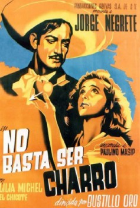

No basta ser charro (1946)


País:México, 90 minutos.
Idiomas:Español
GénerosComedia
Director/es:Juan Bustillo Oro
Guionistas:
Códec de vídeo:Unknown
Número: 3358
TomatoMeter:

--

--
Clasificación IMDb:


6.5/10 (32 votos)
Certificación:
Argumento:
Farmhand exploits his resemblance to a certain movie star to woo his employer's daughter.
Reparto
Jorge Negrete, Lilia Michel, Armando Soto La Marina 'El Chicote'
Medio: Archivo de video,
Localización: D:\PELICULAS\ACTORES\Jorge Negrete\[ Jorge Negrete ] NO BASTA SER CHARRO (1945)\NO BASTA SER CHARRO _ JORGE NEGRETE (1945) (720p_30fps_H264-128kbit_AAC).mp4
Prestado: No
Rel. aspecto: Unknown